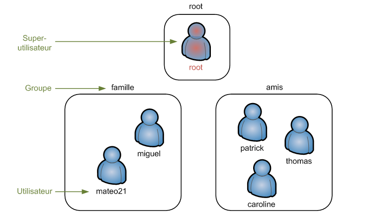
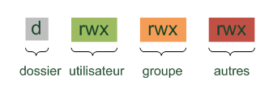
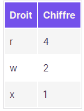

Manipulate files and permissions
Display content file
Two commands make it possible to do this:
catalready seen (display the whole file). ‘-n’ for the line number.lessdisplay the file page by page. Here are some useful shortcuts:Spacedisplays the next part of the file.Entrydisplays the next line.bgoes back to the last part.qstops the reading.
Display the beginning and the end of a file
Two commands make it possible to do this:
headretrieves the first lines. Option ‘n’ indicates the number of lines we want to display.tailfor the end of a file. Same option ‘n’. Option ‘f’ to follow the evolution of a file.
Copy and displacement
cpcopies a file. If you want to do a copy of “testfile”:
$ cp testfile testcopieThe option ‘-R’ enables to copy a whole folder. Let’s see a powerful application using the wildcard (‘joker’) *:
$ cp jeu* jeuFoldermakes it possible to copy all the files beginning by jeu to the folder “jeuFolder”.
Mini Exercise (easy): copy all the jpeg images to another folder.
- `` mv ``` is useful to move a file or rename it.
$ mv file FolderMini Exercise (easy): move all the csv files to another folder.
You can use ‘mv’ to rename a file:
$ mv firstName secondNameSupress files
We use the command rm.
$ rm firstFile secondFileThe option ‘-i’ enables to ask confirmation for each file. The option ‘-r’ can supress all a folder:
$ rm -r folderCreate links between files
There are two kinds of links (shortcuts) in Linux created with ln:
- Physical links
- Symbolic ones
To understand their differences, we have to present some elements on the way Linux handles files.
Files storage
On the hard drive, each file is split into two parts:
- the name
- the permissions
- the content
The names and the contents are not stored at the same place! Each file has an identification number called the inode: file-> inode -> content.
Create symbolic links
A physical link makes it possible to have two names that refer to the same content (inode).
$ touch file1
$ ln file1 file2
$ ls -lIf you change ‘file1’ or ‘file2’, you change the same content.
Create symbolic links
Let’s type:
$ ln -s file1 file2
$ ls -l“file2” points towards the name of ‘file1’ and not to its content.
The users and their permissions
In Linux, several users can be connected at the same time. Each user has its own account and its own persimissions (rights to do something).
Organization of users
Among the users, there is the root (the super-user) with all the rights. Users can be gather into groups.

sudo: become root in an instant
This require your password in order to execute the command with the root permission:
$ sudo commandesudo su: become root definitely
$ sudo su To quit this mode, type exit or Ctrl+D.
Add users
If you want to add the user ‘yanis’:
$ sudo adduser yanis If you want to change his password lately, you can use:
$ sudo passwd yanis To supress its account, use:
$ sudo deluser yanis To also suppress his home, add the following option:
$ sudo deluser --remove-home yanisAdd groups
To create a new group, use:
$ sudo addgroup familyBut anyone is present in this group.
To edit an user, we use usermod. If you want to add ‘yanis’ to the group ‘family’:
$ sudo usermod family yanisIf you want to suppress the group:
$ sudo delgroup familyHandle owners
Only the root can modify the owner of a file. If you want to modify the owner of a file (make yanis the owner of ‘filtest’):
$ sudo chown yanis testFileYou can use chgrp to do the same thing with a group:
$ sudo chgrp family testFileThe same thing could be done with chown by separating the new user and group by a ::
$ sudo chown yanis:family testFileOne can use the option ‘-R’ to do this recursively:
$ sudo chown -R yanis:family FolderChange permissions
The permissions
When you type:
$ ls -lThe first column indicates five different permissions:
- d indicates if the element is a folder
- l indicates if the element is a link
- r indicates if you can read the element
- w indicates if you can write/modify the element
- x for a file indicates that you can run it. For a folder, you can see the different sub-folders.

Modify the permissions
Here we will use chmod (sudo is not necessary: we just need to be the owner of the file). We can give permissions with two methods: using numbers or letters.

To combine the permissions, we have to add up these numbers. If you want to give reading and writing rights, this corresponds to \(4+2=6\):
$ chmod 640 fileTestThe previous command gives:
- reading and writing rights for the owner
- reading right for the group
- nothing for the others.
Another way exists with letter. We need to know that:
- u=user
- g=grou
- o=other
- ‘+’ means adding the permission
- ‘-’ means removing the permission
- ‘=’ to affect permissions
If you want to affect all the rights to the user and the reading permission to the group:
$ chmod u=rwx, g+r fileTestSoftware installation
In this part, we explain how to install a sofware on Debian (this depends on the Linux distributions). In Linux, we have packages: a zip folder that contains all the files of the program: it is a file .deb which contains all the instructions to install a program. We have to focus on two specific points of Linux:
- administration of the dependences: very often, a sofware depends on others softwares called the dependencies.
- All the packages are gathered at the same place, called the repository.
To download the last list of packages, use:
$ sudo apt-get updateTo dowload a package, use (install openarena for instance):
$ sudo apt-get install nomPackage To supress a package and all its useless dependencies, use:
$ sudo apt-get autoremove nomPackageTo update all the packages:
$ sudo apt-get upgrade Commands documentation (important for your autonomy)
In this short part, we explain how to use the manual to have all the ways to use a command.
If you want to know everything on a command (say mkdir), use:
$ sudo man mkdirTo move on this page:
Espaceto go to the next page./to research a word in this documentationQto quit the page.
Each man usage displays the following sections:
- NAME and a short description
- SYNOPSIS lists all the ways to use the command.
- DESCRIPTION is a deeper description of the commands with all the options.
- AUTHOR of the program.
- REPORTING BUGS the people to contact for a bug.
- COPYRIGHT user license.
- SEE ALSO others related commands.
man is useful if you know the name of the command. Otherwhise, use apropos. For instance, if you look for a command related to the sound of your machine (gives all the command which talks about sound in their description):
$ apropos soundLooking for files
There is a lot of commands in this direction. The most popular and powerful command is find. It goes all over your hard drive. The command can use three kinds of arguments:
- where: it is the folder where we look for.
- what: it is the file we look for (by name, size, date,…).
- action: automatic actions on the selected files.
Basic usage
Find a file by name in the current directory:
$ find -name "research.png"If you want to find the file called ‘research.png’ in the directory ‘folder’:
$ find folder -name "research.png"Research with the size:
$ find ~ -size +10MResearch with the date of the last access (less than 7 days):
$ find ~ -name ".odt" -atime 6 Advanced manipulation
You can add an action to the result of the search. For instance, if you want to delete the results:
$ find ~ -name ".odt" -delete With exec you can execute a command for all the files giving by find. Let’s say that you want to change the permissions of all the ‘.odt’ files:
$ find ~ -name ".odt" -exec chmod 640 {} \; How does it work? For each file found, the command after exec is executed. The curly brackets ‘{}’ will be replaced by the name of this file. The command must end with ‘;’.
Exercise: gather all your .jpeg files into a folder ‘images’.